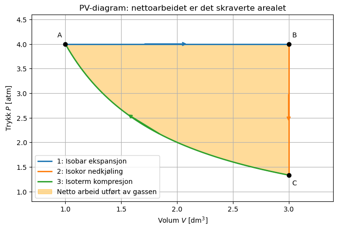
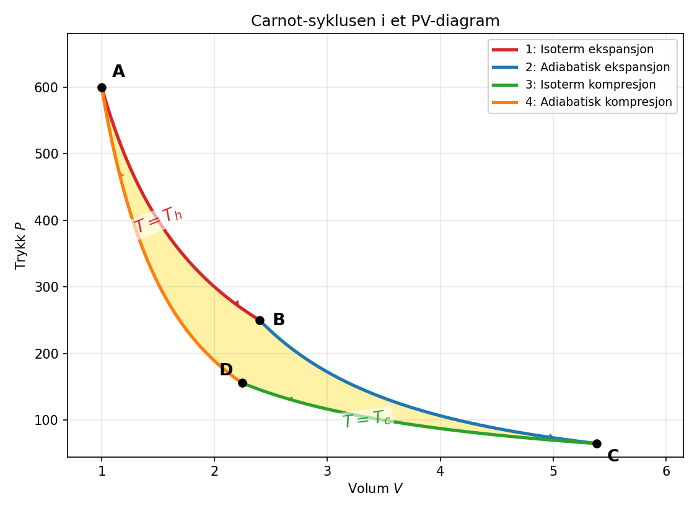

Uke 5 – Varme, Arbeid, Entropi og Effektivitet#
Diskusjonsoppgaver#
Oppgave 1: Prosesser hvor vi holder en variabel konstant.#
a) Forklar kort hva som kjennetegner henholdsvis en isoterm, isokor, isobar og adiabatisk prosess.
Svar
En isoterm prosess har konstant temperatur, altså \(T=\text{konstant}\). For en idealgass gjelder da \(PV=\text{konstant}\).
En isokor prosess har konstant volum, altså \(V=\text{konstant}\). Siden volumet ikke endres, utføres ikke volumarbeid: \(w=0\).
En isobar prosess har konstant trykk, altså \(P=\text{konstant}\).
En adiabatisk prosess har ingen varmeutveksling med omgivelsene, altså \(q=0\). For en reversibel adiabatisk prosess med idealgass gjelder \(PV^\gamma=\text{konstant}\), der \(\gamma=C_P/C_V\).
b) Skisser følgende prosesser i samme PV-diagram, anta idealgass i alle trinn:
Isobar ekspansjon ved et trykk \(P_1\) fra volum \(V_1\) til \(V_2\)
Isokor nedkjøling ved \(V_2\) av gassen til et trykk \(P_2\)
Isoterm kompresjon av gassen fra (\(P_2, V_2\)) til (\(P_1\),\(V_1\))
Svar
import numpy as np
import matplotlib.pyplot as plt
# Gitte verdier
V1 = 1.0 # dm^3
V2 = 3.0 # dm^3
P1 = 4.0 # atm
# Fra isoterm prosess: P1*V1 = P2*V2
P2 = P1 * V1 / V2
# Verdier for isotermkurven
V_iso = np.linspace(V1, V2, 300)
P_iso = P1 * V1 / V_iso
plt.figure(figsize=(8, 5))
# Steg 1: Isobar ekspansjon A -> B
plt.plot(
[V1, V2],
[P1, P1],
linewidth=2,
color="C0",
label="1: Isobar ekspansjon"
)
# Steg 2: Isokor nedkjøling B -> C
plt.plot(
[V2, V2],
[P1, P2],
linewidth=2,
color="C1",
label="2: Isokor nedkjøling"
)
# Steg 3: Isoterm kompresjon C -> A
plt.plot(
V_iso,
P_iso,
linewidth=2,
color="C2",
label="3: Isoterm kompresjon"
)
# Nettoarbeidet: arealet mellom P1 og isotermkurven
plt.fill_between(
V_iso,
P_iso,
P1,
color="orange",
alpha=0.4,
label="Netto arbeid utført av gassen"
)
# Marker tilstandspunktene
plt.scatter([V1, V2, V2], [P1, P1, P2], color="black", zorder=3)
plt.annotate("A", (V1, P1), xytext=(-12, 10),
textcoords="offset points")
plt.annotate("B", (V2, P1), xytext=(5, 10),
textcoords="offset points")
plt.annotate("C", (V2, P2), xytext=(5, -15),
textcoords="offset points")
# Retningspiler for syklusen
plt.annotate(
"",
xy=(2.1, P1),
xytext=(1.7, P1),
arrowprops=dict(arrowstyle="->", color="C0", lw=2)
)
plt.annotate(
"",
xy=(V2, 2.4),
xytext=(V2, 3.0),
arrowprops=dict(arrowstyle="->", color="C1", lw=2)
)
plt.annotate(
"",
xy=(1.55, P1 * V1 / 1.55),
xytext=(1.85, P1 * V1 / 1.85),
arrowprops=dict(arrowstyle="->", color="C2", lw=2)
)
plt.xlabel(r"Volum $V$ [$\mathrm{dm^3}$]")
plt.ylabel(r"Trykk $P$ [atm]")
plt.title("PV-diagram: nettoarbeidet er det skraverte arealet")
plt.xlim(0.7, 3.4)
plt.ylim(0.8, 4.6)
plt.grid()
plt.legend()
plt.show()

c) I diagrammet fra oppgave b, skisser visuelt hva arbeidet utført av denne syklusen blir
Svar Arbeidet gjort av syklusen er lik arealet inne i syklusen i PV-diagrammet, se figur over.
d) Anta at hvert steg gjøres uendelig langsomt (kvasi-statisk) slik at likevekt alltid er opprettet, og null friksjon.
Finn uttrykk for hvor mye arbeid gjøres av systemet på omgivelsene i hvert trinn 1-3?
Bruk \(V_1=1.0\ \mathrm{dm^3}\), \(V_2=3.0\ \mathrm{dm^3}\), \(P_1=4.0\ \mathrm{atm}\), \(V_2=3.0\ \mathrm{dm^3}\), \(T_1=300\ \mathrm{K}\) Finn først \(P_2\) (husk idealgass, og isoterm prosess), og bruk så dette til å finne totale arbeidet utført av syklusen?
Svar
For idealgass og isoterm prosess så gjelder:
Dermed er: $\(P_2=\frac{P_1V_1}{V_2}=\frac{1.0\cdot4.0}{3.0}=1.3333\ \mathrm{atm}\)$
Så for å regne ut arbeidet, generelt har vi at:
Trinn 1: Isobar ekspansjon betyr at trykket er konstant \(P_1\) og dermed:
Siden \(1\ \mathrm{atm\,dm^3}=101.325\ \mathrm{J}\), blir dette
Trinn 2: Dette er en isokor prosess så arbeidet er 0: \(\Delta V = 0\) så \(w_2=0\)
Trinn 3: Ved isoterm reversibel prosess er arbeidet gitt ved:
Siden vi ikke vet stoffmengden av gassen, bruker vi \(PV=nRT\) og \(P_1V_1=P_2V_2\):
Totalt arbeid er da: $\(w=w_1+w_2+w_3=-0.811+0+0.447\ \mathrm{kJ}=-0.364\ \mathrm{kJ}\)$
Siden totalarbeidet er negativt så gjør gassen arbeid på omgivelsene. Det vil si for hver runde rundt syklusen får vi ut arbeid på \(0.364\ \mathrm{kJ}\).
e) Hva er entropiendringen til gassen for den isoterme kompresjonen (steg 3), og hva er gassens entropiendring totalt?
Svar For en isoterm reversibel prosess er:
Som betyr at:
Dermed:
Den reversible isoterme kompresjonen reduserer altså entropien til gassen tilbake til utgangspunktet, og entropiendringen til gassen for hele syklusen er 0.
Oppgave 2: Irreversible prosesser, hva skjer med temperaturen?#
a) En idealgass utvides adiabatisk fra et volum \(V_1\) til et høyere volum \(V_2\). Diskuter hva dere tror vil skje med temperaturen til gassen.
Svar Gassen gjør arbeid på omgivelsene når den utvider seg (\(w<0\)), og siden prosessen er adiabatisk kommer det ingen varme inn (\(q=0\)). Første lov gir da \(\Delta U = w < 0\): gassen må bruke sin egen indre energi til å utføre ekspansjonsarbeidet. For en idealgass er \(U\) kun en funksjon av temperaturen, så temperaturen må synke. Mikroskopisk kan vi si at molekylenes kinetiske energi overføres til stempelet når de kolliderer med det og skyver det utover, dermed minker \(T\).
La oss se nå på et konkret irreversibelt eksempel hvor vi har en idealgass i et termisk isolert stempel ved \(V_1=0.8\ \mathrm{dm^3}\), \(P_1=5\ \mathrm{atm}\) og \(T_1=350\ \mathrm{K}\)
b) Gassen utvides irreversibelt og adiabatisk mot et konstant ytre trykk \(P_{ext}=1.5\ \mathrm{atm}\) til den når likevekt ved et volum \(V_2\) der trykket av gassen er likt med det ytre trykket, \(P_2=P_{ext}\). Uten å regne på spesifikke tall diskuter følgende:
Hvor mye varme, \(q\), utveksles med omgivelsene?
Hva er da endringen i indre energi?
Sett opp et uttrykk for arbeidet \(w\).
Svar
Systemet er termisk isolert, så det utveksles ingen varme med omgivelsene:
Første lov gir da direkte:
Siden gassen ekspanderer, er \(\Delta U<0\) og temperaturen synker (som forventet i a).
Prosessen går mot et konstant ytre trykk, så arbeidet er ikke gitt ved \(\int P\,dV\) med gassens trykk, men av det ytre trykket:
Legg merke til at dette er det samme uttrykket som for en reversibel isobar prosess, men her er \(P_{ext}\) konstant under hele ekspansjonen, mens gassens eget trykk \(P\) endrer seg. Det er dette som gjør prosessen irreversibel, gassens trykk og det ytre trykket er ulike underveis, og stempelet gjør ikke maksimalt arbeid.
c) Legg merke til at vi ikke vet hva det endelige volumet \(V_2\) er etter ekspansjonen. Vi vet bare at når volumet \(V_2\) er gassen i likevekt slik at \(P_2=P_{ext}\).
Bruk disse hintene (1-4) og finn en verdi for \(V_2\):
Fra første lov vet vi at \(\Delta U = q + w\)
For en gass med konstant molar varmekapasitet \(C_{V,m}\) kan endring i indre energi uttrykkes som: \(\Delta U = nC_{V,m}(T_2-T_1)\)
For idealgass så er \(C_{V,m}=\frac{3}{2}R\)
Husk at dere fant uttrykket for arbeidet i oppgave b
Svar Vi setter uttrykkene fra hintene inn i første lov. Med \(q=0\):
Problemet er at vi nå har to ukjente, \(T_2\) og \(V_2\). Løsningen er å bruke idealgassloven i slutt-tilstanden, der \(P_2 = P_{ext}\):
og
Satt inn i energibalanse-likningen:
Vi kan så faktorisere ut \(1/nR\) på venstre side:
Siden \(C_{V,m} = \frac{3}{2}R\) blir venstre side \(\frac{nC_{V,m}}{nR}=\frac{3}{2}\frac{R}{R}=\frac{3}{2}\).
Løser vi for \(V_2\) ved å flytte alle \(V_2\)-leddene på venstre side:
Dermed:
Setter inn tallene:
Gassen har altså et mer enn dobbelt så stort volum som den startet med.
d) Hvor mye arbeid gjorde gassen i løpet av ekspansjonen, og hva er temperaturen til gassen (\(T_2\)) etter denne utvidelsen?
Diskuter om dette stemmer med det vi forventet. Uten å regne på det, hva om prosessen hadde blitt gjort reversibelt?
Svar Arbeidet fra b og temperaturen fra idealgassloven i slutt-tilstanden:
Med \(1\ \mathrm{atm\,dm^3} = 101.325\ \mathrm{J}\):
For å finne temperaturen kan vi først finne stoffmengden til gassen. Dette gjør vi fra idealgassloven i start-tilstanden (med \(R = 0.082057\ \mathrm{dm^3\,atm\,mol^{-1}K^{-1}}\)):
Temperaturen falt altså fra \(350\ \mathrm{K}\) til \(252\ \mathrm{K}\), en nedgang på ca. \(100\ \mathrm{K}\). Dette stemmer godt med forventningen fra a: gassen bruker indre energi på ekspansjonsarbeidet, og avkjøles.
Hadde ekspansjonen derimot blitt gjort reversibelt og adiabatisk til samme slutttrykk \(P_2 = P_{ext}\), forventer vi at temperaturen synker enda mer. Dette kan kanskje virke rart, men når vi gjør utvidelsen reversibel med infinitesimale små steg vil gassens trykk (nesten) være i likevekt med det ytre trykket, og hver utvidelse krever det maksimale arbeidet fra gassen. Dette tilsvarer at mest mulig av den kinetiske energien til gassen går med til å dytte stempelet.
Det er ikke nødvendig for selve oppgaven, men vi kan finne temperaturen vi ville ha fått etter reversibel ekspansjon som:
Her er \(\gamma = \frac{C_P}{C_V} = \frac{5}{3}\), så \(\frac{\gamma-1}{\gamma} = \frac{2}{5}\). Den reversible adiabaten gir en lavere slutttemperatur (\(216\ \mathrm{K}\) mot \(252\ \mathrm{K}\)).
e) Vi vil nå komprimere gassen tilbake til sitt opprinnelige volum \(V_1\), dette gjør vi nå helt reversibelt, og fremdeles adiabatisk.
Diskuter, tror dere at dette vil returnere gassen til sin opprinnelige tilstand, hvorfor, hvorfor ikke?
For en adiabatisk og reversibel prosess så kan vi vise at \(PV^{\gamma}\) er konstant. Her er \(\gamma=\frac{C_p}{C_v}\), og som for en idealgass blir \(\gamma=\frac{C_p}{C_v}=\frac{5}{3}\).
Bruk dette til å finne det nye trykket som gassen får når vi har komprimert den tilbake til det opprinnelige volumet \(V_1\).
Hva er nå temperaturen i gassen?
Svar Nei, gassen kommer ikke tilbake til sin opprinnelige tilstand. Siden den irreversibele ekspansjonen produserte entropi, kan ikke den reversible kompresjonen «fjerne» den igjen. Gassen komprimeres adiabatisk fra tilstanden \((P_2, V_2)\) etter ekspansjonen, ikke fra den opprinnelige tilstanden.
For den reversible adiabatiske kompresjonen gjelder \(P_2V_2^{\gamma} = P_3V_1^{\gamma}\), der \(P_3\) er trykket etter kompresjonen:
Dette er høyere enn starttrykket \(P_1 = 5\ \mathrm{atm}\). Temperaturen følger av idealgassloven, eller tilsvarende fra \(T_2V_2^{\gamma-1} = T_3V_1^{\gamma-1}\):
Gassen er altså varmere og under høyere trykk enn da vi startet. Vi har returnert den til volumet \(V_1\), men ikke til den opprinnelige tilstanden \((P_1, V_1, T_1)\).
f) Diskuter følgende:
Hvorfor øker temperaturen til gassen, og hvor kommer den «ekstra» energien fra?
Kan vi forstå dette fra et mikroskopisk perspektiv?
Hva hadde skjedd med slutttemperaturen om begge stegene (både ekspansjon og kompresjon) ble gjort reversibelt?
Hint: tenk på entropien!
Svar
Hvor kommer den ekstra energien fra? Her er det viktig å presisere at det ikke finnes «ekstra» energi og at energibevarelse gjelder hele veien. Når det er sagt, i det irreversible steget gjorde gassen mindre arbeid (\(170\ \mathrm{J}\)) enn den ville gjort reversibelt (ca. \(240\ \mathrm{J}\)) mellom de samme trykkene. Hadde ekspansjonen blitt gjort reversibelt, ville arbeidet gjort av gassen på omgivelsene vært akkurat like stort som arbeidet omgivelsene måtte gjøre på gassen for å komprimere den tilbake.
Men under irreversibel ekspansjon utvides gassen uten å miste like mye kinetisk energi som den ville gjort reversibelt. Når vi senere komprimerer tilbake til \(V_1\) og selv om vi gjør det reversibelt og adiabatisk, må vi tilføre mer arbeid enn vi fikk ut i første steg, og alt dette arbeidet varmer gassen opp.
Mikroskopisk: Under den irreversible ekspansjonen, er det ytre trykket alltid lavere enn gasstrykket, det er “lettere” for partiklene å dytte på det og de mister mindre kinetisk energi i hver kollisjon (vi mister nyttig arbeid). For å komprimere gassen tilbake må vi nå dytte imot gasspartiklene, noe som gir dem mer kinetisk energi, og siden vi må bruke mer arbeid enn det gassen gjorde i ekspansjonen, får gasspartiklene betydelig mer kinetisk energi når de er tilbake ved \(V_1\).
Hva om begge steg var reversible? Da ville vi fulgt to reversible adiabater mellom \(V_1\) og \(V_2\) (en ned og en opp), og hver av disse holder entropien konstant. Slutt-tilstanden ville da blitt nøyaktig \((P_1, V_1, T_1)\), og temperaturen ville returnert til \(350\ \mathrm{K}\). Sirkelen kan bare lukkes hvis ingen entropi produseres underveis:
Siden entropi er en tilstandsfunksjon, kan gassen bare komme tilbake til \(T_1\) hvis den totale entropiendringen rundt sløyfen er null. Med et irreversibelt steg i mellom er det umulig; nettopp dette er innholdet i andre lov og Clausius’ ulikhet, som vi ser nærmere på i neste oppgave.
Oppgave 3: Clausius ulikhet#
La oss se litt mer på systemet i forrige oppgave.
a) Hva er endringen i gassens entropi når systemet er tilbake til \(V_1\)? Bruk at:
Svar Nøkkelen her er at entropi er en tilstandsfunksjon: \(\Delta S\) avhenger bare av start- og slutt-tilstanden, ikke av hvilken vei systemet tok mellom dem. Vi trenger altså ikke å dele den faktiske prosessen opp i steg; vi kan like gjerne se på en tenkt, reversibel, prosess direkte fra start-tilstanden \((P_1, V_1, T_1)\) til slutt-tilstanden \((P_3, V_3, T_3)\), og bruke formelen på den.
Etter kompresjonen er gassen ved \((P_3, V_1, T_3) = (6.45\ \mathrm{atm},\ 0.8\ \mathrm{dm^3},\ 452\ \mathrm{K})\), og start-tilstanden var \((P_1, V_1, T_1) = (5\ \mathrm{atm},\ 0.8\ \mathrm{dm^3},\ 350\ \mathrm{K})\). Siden volumet er det samme i start og slutt, forsvinner volumleddet i formelen helt:
Det gjenstår bare temperaturleddet. Med \(n = 0.139\ \mathrm{mol}\) og \(C_{V,m} = \frac{3}{2}R = 12.47\ \mathrm{J\,K^{-1}mol^{-1}}\):
Altså: selv om volumet er tilbake på \(V_1\), er gassen ikke tilbake i sin opprinnelige tilstand — den har høyere temperatur og trykk, og entropien har økt med \(+0.44\ \mathrm{J\,K^{-1}}\).
b) Hva er entropiendringen til omgivelsene?
Svar Hele prosessen skjer i et termisk isolert system (adiabatisk stempel), så omgivelsene utveksler ingen varme med gassen. Derfor:
Den totale entropiendringen blir da:
Som forventet for en irreversibel prosess: entropien til universet øker, og prosessen kan ikke gå baklengs av seg selv.
c) Fra Clausius ulikhet har vi at:
For prosessen i oppgave 2, hva blir \(\frac{dq}{T}\)?
Og er det da \(dS= \frac{dq}{T} \) eller \(dS> \frac{dq}{T}\) som gjelder?
Hva må til for at \(dS= \frac{dq}{T}\)?
Svar For den irreversibele ekspansjonen i oppgave 2 var prosessen adiabatisk, \(dq = 0\), slik at:
Vi er altså i tilfelle der det gjelder det strenge ulikhetstegnet:
Entropien øker selv om ingen varme flyter. Dette er kjerneinnholdet i Clausius’ ulikhet: entropi produseres av selve prosessens irreversibilitet (friksjon, turbulens, brå ekspansjon), ikke bare av varmeoverføring.
For at likheten \(dS = dq/T\) skal gjelde, må prosessen være reversibel (kvasistatisk, uten friksjon, med systemet i likevekt under hele veien) i alle trinn. Da finnes ingen ekstra entropiproduksjon, og all entropiendring skyldes den utvekslede varmen: \(dS = dq_{\mathrm{rev}}/T\).
Oppgave 4: Carnot maskiner og maksimal effektivitet#
En Carnot maskin er en tenkt idealisert syklus som består av 4 reversible trinn gjort på en idealgass:
Isoterm ekspansjon der systemet er knyttet til et varmt reservoar med temperatur \(T_{h}\), fra tilstand A(\(P_1\), \(V_1\), \(T_h\)) til en tilstand B(\(P_2\), \(V_2\), \(T_h\))
Adiabatisk ekspansjon fra tilstand B(\(P_2\), \(V_2\), \(T_h\)) til en tilstand C(\(P_3\), \(V_3\), \(T_c\)) ved en lavere temperatur \(T_c\).
Isoterm kompresjon der systemet er knyttet til et kaldt reservoar med temp \(T_c\), fra tilstand C(\(P_3\), \(V_3\), \(T_c\)) til tilstand D(\(P_4\), \(V_4\), \(T_c\)).
Adiabatisk kompresjon tilbake til starttilstanden A(\(P_1\), \(V_1\), \(T_h\))
Dette er altså en syklus som transporterer varme fra det varme reservoaret til det kalde reservoaret, og bruker dette til å gjøre arbeid. Ettersom at syklusen består kun av reversible steg, gir den det størst mulige arbeidet ved en gitt temperaturforskjell mellom reservoarene og er den mest effektive maskinen vi kan tenke oss. Men hvor god er effekten egentlig?

a) Siden dette er en syklus, hva er da \(\Delta U\) for hele prosessen? Hva med \(\Delta S\) for både gassen og omgivelsene?
Svar \(U\) er en tilstandsfunksjon, og syklusen ender i nøyaktig samme tilstand som den starter i. Derfor:
Det samme gjelder entropien til gassen: også \(S\) er en tilstandsfunksjon, så
For omgivelsene er situasjonen annerledes. Omgivelsene består av to reservoarer som utveksler varme ved faste temperaturer, og disse går ikke tilbake til en tidligere tilstand: det varme reservoaret har mistet varme, det kalde har fått varme. Siden alle trinn er reversible, er imidlertid den totale entropiendringen null:
som er nettopp forholdet vi skal bruke i e. Merk forskjellen: gassens entropi er null fordi den er i samme tilstand som før; reservoarenes netto entropiendring er null fordi de reversible varmeoverføringene balanserer hverandre. Til sammen gir dette \(\Delta S_{\mathrm{tot}} = 0\), som kjennetegner en reversibel syklus.
b) Hvor mye varme utveksles i hver av de 4 trinnene, og i hvilken retning går denne varmen?
Svar Vi går trinn for trinn:
Trinn 1, isoterm ekspansjon ved \(T_h\): Temperatur og indre energi er konstant (\(\Delta U = 0\) for idealgass ved konstant \(T\)), så første lov gir \(q_h = -w_1 > 0\). Gassen tar opp varme fra det varme reservoaret:
Trinn 2, adiabatisk ekspansjon:
Gassen kjøles ned fra \(T_h\) til \(T_c\) fordi den bruker indre energi på ekspansjonsarbeid.
Trinn 3, isoterm kompresjon ved \(T_c\): Igjen er \(\Delta U = 0\), men nå komprimeres gassen, så \(w_3 > 0\) og varmen er negativ. Gassen avgir varme til det kalde reservoaret:
Trinn 4, adiabatisk kompresjon:
Gassen varmes opp fra \(T_c\) tilbake til \(T_h\) av kompresjonsarbeidet som tilføres.
Kort oppsummert: varme tas inn bare i trinn 1 (fra det varme reservoaret) og gis ut bare i trinn 3 (til det kalde reservoaret); de to adiabatene utveksler ingen varme.
c) Diskuter hvorfor arbeidet som gjøres av syklusen er gitt ved:
Svar Første lov for hele syklusen gir:
Her er \(q = q_h + q_c\) den totale varmen utvekslet (med \(q_c < 0\) siden den flyter ut av systemet). Dermed:
Skriver vi \(q_c\) som positiv størrelse \(|q_c|\) (varmemengden avgitt til det kalde reservoaret), får vi:
Fysisk betyr dette: gassen tar opp \(q_h\) fra det varme reservoaret, men må gi igjen \(q_c\) til det kalde reservoaret. Forskjellen, \(q_h - q_c\), er den energien som er tilgjengelig som arbeid.
d) Vi kan definere effektiviteten som arbeidet vi får ut, delt på varmen som kommer inn fra det varme reservoaret. Sett opp et uttrykk for effektiviteten med \(q_h\) og \(q_c\).
Svar Effektiviteten \(\eta\) defineres som nyttig arbeid delt på investert varme:
e) For en idealisert reversibel prosess som den vi har her kan vi vise at:
Bruk dette til å uttrykke effektiviteten med \(\frac{T_c}{T_h}\), og diskuter hva må til for å få 100% effektivitet.
Svar Setter inn forholdet ovenfor i uttrykket fra d:
Dette er Carnot-effektiviteten, og den avhenger kun av temperaturene til de to reservoarene, ikke av gassarten, arbeidsstoffet eller størrelsen på syklusen.
For å få 100 % effektivitet må \(\frac{T_c}{T_h} = 0\), dvs. enten \(T_c = 0\ \mathrm{K}\) eller \(T_h \to \infty\). Begge deler er umulig i praksis, og dette viser at Ingen varmemaskin som går i en syklus, kan noensinne omgjøre varme fullstendig til arbeid.
Dette er en av formuleringene av termodynamikkens andre lov. Konkret betyr det at selv en perfekt Carnot-maskin alltid må kaste en del av energien som varme til et kaldt reservoar. Som et konkret eksempel: en Carnot-maskin mellom \(T_h = 500\ \mathrm{K}\) og \(T_c = 300\ \mathrm{K}\) har effektivitet \(\eta = 1 - 300/500 = 0.4\), altså maksimalt 40 %. Alle ekte (irreversible) maskiner gjør det dårligere enn dette, siden \(\eta_{\mathrm{Carnot}}\) er den teoretiske grensen hvis alt gjøres reversibelt.
Regneoppgaver#
Oppgave 1#
En jernbit blir plassert i kontakt med en aluminiumskloss. Begge har et volum på \(50 cm^3\). Temperaturen til jernbiten har er \(0^{\circ}C\) og aluminiumsklossen \(100^{\circ}C\). De to klossene settes inntil hverandre slik at de er i termisk kontakt, og likevekt innstiller seg. Anta at systemet er termisk isolert.
\(C_{p,m}= 25.10 J K^{-1} mol^{-1}\) for jern og \(C_{p,m}= 24.4 J K^{-1} mol^{-1}\) for aluminium. Tetthetene er henholdsvis \(2.698 g cm^{-3}\) og \(7.874 g cm^{-3}\) for aluminium og jern.
a) Finn slutt-temperaturen når termisk likevekt er nådd.
Svar Først må vi finne stoffmengdene:
\(M_\text{Al} = 26.98\), \(M_\text{Fe} = 55.85\ \text{g/mol}\).
Det er verdt å legge merke til: samme volum, men jernbiten inneholder over 40 % flere mol. Det kommer til å trekke slutt-temperaturen mot jernets startverdi.
Siden trykket er konstant har vi \(\Delta H = q_p\). Ved termisk likevekt vil det ikke lenger overføres noen netto varme mellom systemene, så \(\Delta q_p=0=q_{p,Al}-q_{p,Fe}\).
Fra definisjonen av varmekapasitet har vi også \(\Delta H = n\cdot C_{p,m} \cdot \Delta T\), dermed får vi
Løser for \(T_f\):
Regner ut de to varmekapasitetene (total, \(nC_{p,m}\)):
Slutt-temperaturen ligger noe nærmere jernets 0 °C enn midtpunktet (50 °C). Dette kommer av at jernets totale varmekapasiteten er større enn aluminiums.
b) Beregn \(\Delta S\) for hver av de to klossene, og for de to klossene til sammen.
Svar
Aluminium (avkjøles, \(373.15 \to 313.9\)):
Jern (varmes opp, \(273.15 \to 313.9\)):
Til sammen:
c) Kommenter kort fortegnene til de tre entropi-endringene som er beregnet.
Svar
aluminiumet (avkjøles) taper entropi, jernet (varmes opp) vinner entropi.
Total endring i entropi er positiv. Selv om aluminiumet og jernet utveksler nøyaktig like mye varme, tar jernet opp denne varmen ved lavere temperatur enn aluminiumet avgir den, og siden entropibidraget \(q/T\) er størst der \(T\) er lav, blir jernets gevinst større enn aluminiumets tap.
\(\Delta S_\text{tot} > 0\) bekrefter at varmeutjevningen er en spontan, irreversibel prosess. Så snart de to bitene har samme temperatur, stopper netto varmestrøm. systemet har nådd termisk likevekt, den tilstanden med flest tilgjengelige mikrotilstander.
Oppgave 2#
Beregn endringen i molar entropi når en prøve argongass komprimeres fra \(2 dm^3\) til \(0.5 dm^3\), samtidig som den varmes opp fra \(300K\) til \(400K\).
Svar
Fordi entropiforandringer avhenger kun av begynnelse- og slutt-tilstand, er forandringen den samme om den utføres i et eller flere trinn. Vi deler derfor prosessen opp i to trinn og beregner entropiforandringen i hver av de:
\(ΔS=ΔS_{kompresjon}+ ΔS_{oppvarming}\)
Først ser vi på den isoterme volumforandringen og deretter temperaturforandring ved konstant volum.
Fra termodynamikkens første lov vet vi at endringen i indre energi kan skrives som: $\(dU=dq+dw\)$
Og vi har at \(dU=C_V dT\).
Ettersom temperaturen er konstant får vi: $\(dU=C_V, dT=dq-pdV=0\)\( \)\(dq_rev=pdV\)$
Vi vet også at entropien kan defineres som \(dS=\frac{dq_{rev}}{T}\), noe som gir: $\(dS_{kompresjon}=\frac{dq_{rev}}{T}=\frac{(\frac{nRT}{V})}{T}dV=\frac{nR}{V} dV\)$
Entropiendringen i kompresjonen blir altså
Deretter ser vi på den isokore oppvarmingen (konstant volum). Igjen har vi at dU=dq+dw og C_V dT=dq_rev-pdV. Ettersom volumet er konstant får vi nå
Den totale, molare, entropiendringen for prosessen blir altså:
Vi ser at entropiendringen i dette tilfellet er negativ, dette er mulig fordi vi ikke ser på et lukket system.
Oppgave 3#
Beregn den absolutte entropien for \(SO_2\)(g) ved 300,0 K og 1,00 bar gitt følgende informasjon:
\(S_{m}^\circ(15,0 K) = 1,26 JK^{-1}mol^{-1}\), \(C_{p,m}(s) = 32,65 JK^{-1}mol^{-1}\), \(T_m = 197,64 K\), \(\Delta_{fus}H_{m}^\circ = 7402 J mol^{-1}\), \(C_{p,m}(l) = 87,20 JK^{-1}mol^{-1}\), \(T_b = 263,08 K\), \(\Delta_{fus}H_{m}^\circ = 24937 J mol^{-1}\), \(C_{p,m}(g) = 39,88 JK^{-1}mol^{-1}\).
Kommenter også på hva som øker entropien mest og hvorfor.
Hint: i denne oppgaven lønner det seg (igjen) å først få en oversikt over hvilke delprosesser vi kan dele problemet opp i. Start ved å lage et enkelt diagram for hvordan entropien øker som funksjon av temperatur, fra fast stoff til gass, og identifiser ulike entropiøkninger og hvordan du kan regne de ut.
Svar
Vi vet at det her vil forekomme flere faseoverganger hvor entropien vil gjøre et «hopp», i tillegg til at den gradvis vil øke gjennom oppvarming av hver fase. Vi deler derfor prosessen opp i flere trinn, både for oppvarming av hver fase og hver faseovergang.
Husk at: \(dS = \frac{dq_{rev}}{T}\), \(C_p = \frac{dq_{rev}}{dT}\) og at ved en faseovergang har vi \(q_{rev} = \Delta H_{trs}^\circ\)
Oppvarming fra 15 K til smeltepunktet (\(T_{mp}\)):
Faseovergang: \(SO_2(s) \rightarrow SO_2(l)\)
Oppvarming av \(SO_2\)(l) fra \(T_{mp}\) (smeltepunkt) til \(T_{bp}\) (kokepunkt)
Faseovergang: \(SO_2(l) \rightarrow SO_2(g)\)
Oppvarming av gass fra \(T_{bp}\) til 300 K
Summerer alle bidragene for å finne total entropi ved 300K:
Entropien øker mest i overgangen mellom væske og gass, noe som er forventet med tanke på endring i volum og hvordan det vil øke antallet mikrotilstander.
Oppgave 4#
Joule Thomson effekten utnyttes til å
Vi ser på et adiabatisk system hvor en gass strupes gjennom en ventil eller porøs plugg (throttle) og endrer temperatur. Vi skal bruke simuleringen gitt i lenken under, hvor man kan vløege 4 ulike gasser og justere temperatur og trykk på “inn-siden” samt trykk på “ut-siden”. Merk at den porøse ventilen er tykkere jo større trykkfallet skal være.
https://learncheme.com/simulations/thermodynamics/thermo-1/joule-thomson-expansion/
a) Siden gassen kun gjør et arbeid på seg selv, og det ikke er noen varmeutveksling med omgivelsene er \(\Delta H = 0\) for prosessen. Siden entalpi er en funksjon av trykk og temperatur kan vi skrive \(dH = (\frac{\partial H}{\partial T})_pdT + (\frac{\partial H}{\partial p})_Tdp\). Bruk Joule-Thomson koeffisienten: \(\mu_{JT}=\left(\frac{\partial T}{\partial p}\right)_H\), vis at vi kan skrive sluttemperaturen som
Svar
Siden \((\frac{\partial H}{\partial T})_p = C_p\) og \(\Delta H = 0\) kan vi skrive
\(\mu_{JT}\) vil variere med både trykk og temperatur, hvis vi skal integrere uttrykket over må vi da bruke \(\mu_{JT}(T,p)\):
b) Beskriv hvordan Joule-Thomson koeffisienten: \(\mu_{JT}=\left(\frac{\partial T}{\partial p}\right)_H\) og inverteringstemperaturen henger sammen med intermolekylære krefter.
svar For en ideell gass finnes det ingen intermolekylære krefter. Entalpien avhenger da bare av temperaturen: \(H=H(T)\) Siden Joule–Thomson-prosessen er isentalpisk, vil en ideell gass derfor ikke endre temperatur og \(\mu_{JT} = 0\).
For reelle gasser derimot må vi ta hensyn til både attraktive og frastøtende intermolekylære krefter. Attraktive krefter dominerer ved lange intermolekylære avstander, mens frastøtende dominerer ved kortere avstander. Lavere trykk vil gi større avstand mellom molekylene. Derfor vil de attraktive kreftene alltid i hovedsak være viktigst ved lavt trykk, og JT-koeffisienten burde være positiv \(\mu_{JT} > 0\). Når trykket minker fra “inn”-siden til “ut”-siden og gassen ekspanderer øker den gjennomsnittlige avstanden mellom molekylene. Det krever energi å motvirke de attraktive kreftene, og denne energien tas fra molekylenes bevegelsesenergi. Temperaturen synker derfor og \(\mu_{JT} > 0\).
Ved høye temperaturer eller høyt trykk vil effekten av frastøtende krefter kunne dominere. Da vil ekspansjon føre til at temperaturen øker og koeffisienten er da negativ: \(\mu_{JT} < 0\).
Inverteringstemperaturen er temperaturen der Joule–Thomson-koeffisienten skifter fortegn. Under inverteringstemperaturen er \(\mu_{JT} > 0\), og gassen kjøles. Over inverteringstemperaturen er \(\mu_{JT} < 0\) og gassen varmes opp. Når \(\mu_{JT} = 0\), altså ved inverteringstemperaturen, antar vi at effektene av intermolekylære attraktive og frastøtende krefter er akkurat like store.
c) Se først på \(NH_3\) gass. Velg \(p_{in} = 4 MPa\), \(T_{in} = 645 K\) og \(p_{out} = 0.1 MPa\). Stemmer \(T_{out}\) i simuleringen med hva du får ved bruk av svaret ditt i oppgave a?
svar velger f.eks. å sette \(p_{in} = 4 MPa\), \(T_{in} = 645 K\) og \(p_{out} = 0.1 MPa\). JT-koeffisienten er da \(\mu_{JT} = 2.71\), og vi får at
Dette stemmer med verdien i simuleringen. Siden \(\mu_{JT} > 0\) synker temperaturen ved ekspansjon.
d) Se nå på \(N_2\) gass. Sammenlikn \(\Delta T\) nå med det du så for \(NH_3\). Hva har skjedd?
svar Nitrogen er upolart og har svakere intermolekylære attraktive krefter enn ammoniakk (nærmere ideell oppførsel). Derfor er Joule–Thomson-koeffisienten vanligvis mindre for \(N_2\) (g) enn for \(NH_3\) (g) ved sammenliknbare betingelser. Vi forventer dermed at nitrogen også kan avkjøles dersom temperaturen ligger under inverteringstemperaturen, men temperaturfallet blir typisk mindre.
e) Til slutt skal vi se på \(H_2\). Velg først \(p_{in} = 5 MPa\), \(T_{in} = 55 K\) og \(p_{out} = 0.1 MPa\). Hva skjer når du setter \(T_{in} > 180K\)?
Ved 55 K ligger hydrogen godt under inverteringstemperaturen. Joule–Thomson-koeffisienten er da positiv og temperaturen synker ved ekspansjon. Når man krysser inverteringstemperaturen (\(T_i = 180 K\)) vil koeffisienten skifte fortegn og hydrogen vil ikke lenger avkjøles, men varmes opp ved ekspansjon.